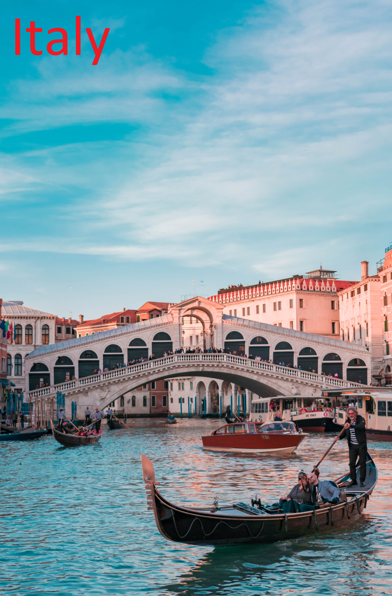

אִיטַלְיָה, או בשמה הרשמי: הָרֶפּוּבְּלִיקָה הָאִיטַלְקִית (באיטלקית: Repubblica Italiana, "רֵפּֿוּבְּלִיקָה אִיטַלְיָאנָה" להאזנה (מידע • עזרה)) היא מדינה בדרום אירופה, המכסה את רוב חצי האי האפניני, ואזורים נוספים. היא כוללת למעלה מ-20 איים, הגדולים שבהם הם סיציליה וסרדיניה. מצפון היא תחומה על ידי הרי האלפים, שם היא גובלת בצרפת, בשווייץ, באוסטריה ובסלובניה. בצפון-מרכז המדינה נמצאת המדינה הזעירה סן מרינו, ובמרכז המדינה, בתוך העיר רומא, נמצאת קריית הוותיקן. בשל צורתה הגאוגרפית המזכירה מגף היא מכונה "ארץ המגף"[7].